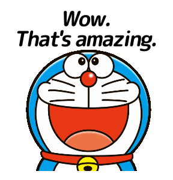
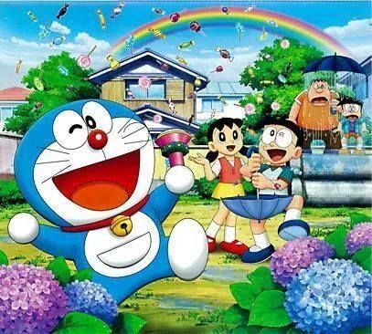
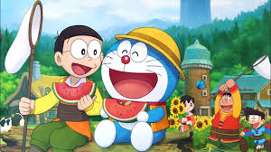
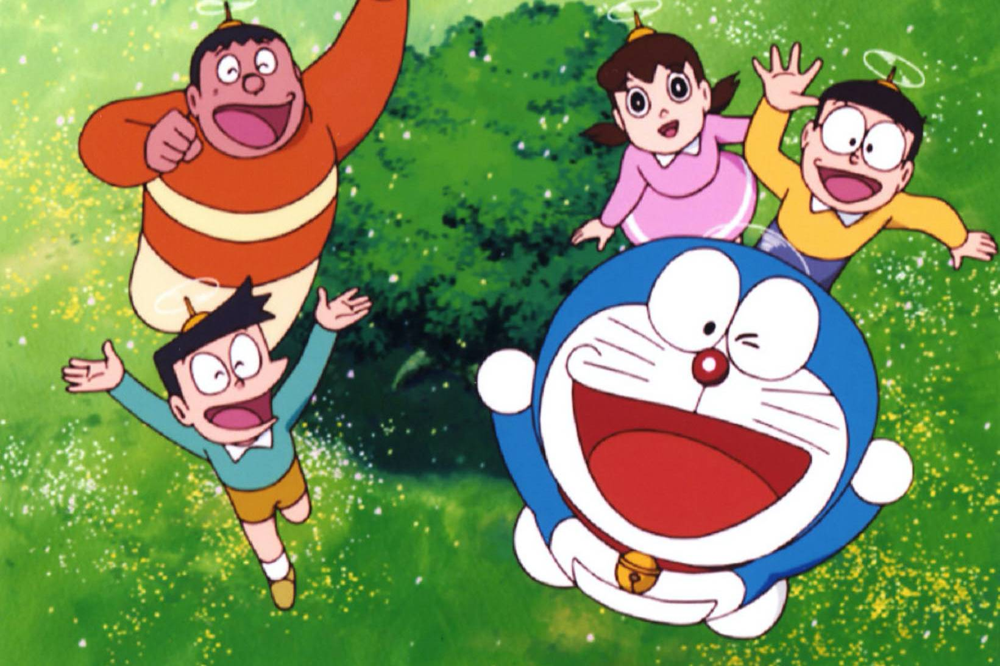

DOREMON :

My favourite Cartoon character is Doraemon.
He is a cat robot from the 22nd Centuary.
He has a pocket on his stomach and many gadgets in it like the “bamboo copter”, anywhere door,
fast / slow perfume, Gulliver’s tunnel, small light and big light etc. His sister’s name is Doremee.
Doraemon lives with his best friend Nobita.
Doremee lives in the 22nd Century with Nobita’s grandson in the future world.
Doraemon came through the time machine which is in Nobita’s drawer.
Nobita is a very lazy boy and he asks different gadgets to Doraemon for whatever he has to do.
Nobita doesn’t study at all and so gets zero in all his tests.
He always falls into some trouble, because he misuses Doraemon’s gadgets, but Doraemon always saves Nobita.


